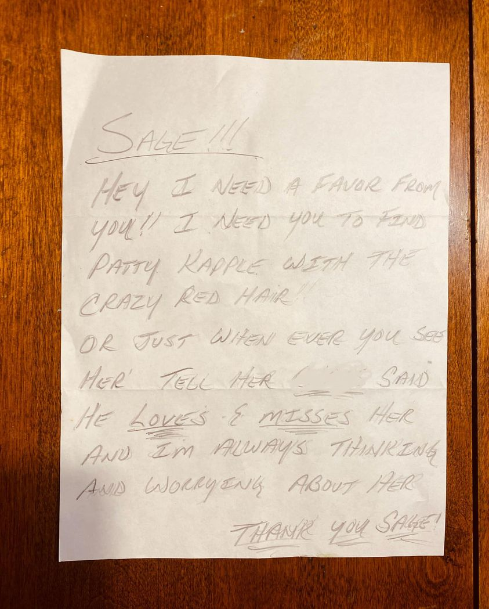

Mobile uploads
The most heartwarming part of my homeless work is when I get to connect my homeless friends with their non-homeless friends and family.
I have an adult daughter that contacts me once a year to make sure her dad is still alive.
I’ve had moms check up on their sons whom they had to kick out of the house because the son was becoming too violent.
I’ve had painful interactions too. Sometimes a son will want me to reach out to their dad because they are sober and working. The dad will do nothing other than berate the son about how it won’t last and he’s a perpetual loser.
I had a man call me after his brother died of an overdose. It was 30 minutes of recounting every terrible thing my friend did since he was 13. The brother refused to participate with the funeral in any way.
But the good encounters leave an indelible mark on me far more than the bad encounters.
It’s the teenage daughters that blow me away. No matter what terrible things their dads have done to them they bring the most enlightened and saintly love and forgiveness I’ve ever witnessed.
I got to go to the funeral of a friend of mine where his 13 year old daughter spoke about her dad. She had profound wisdom of the entire situation. I felt like I was listening to a spiritual guru who had been reincarnated 1000s of lifetimes to come to this place and time on earth to share her great universal knowledge.
And the story I can’t tell enough: Josh Imler, maybe the most down-in-it homeless person I have ever met, was pulled out of the pit of homeless death by his teenage daughter. She just never gave up on him.
The attached picture is a letter I got in the mail for Patty. I haven’t given it to her yet.
What moves a person to take the time to write such a lovely note, and so beautifully written? How much love must have swelled in this person’s heart to write this letter and then find my address, write it on an envelope, put a stamp on it, and put it in the mail?
It’s these kinds of profound acts of kindness that keep me going. A letter like this is a momentous act of free will. Most letters of love never get written. Or if they get written they never get sent. It’s pure goodness pulled from nothing and manifest into the physical world. It’s truly wonderful.